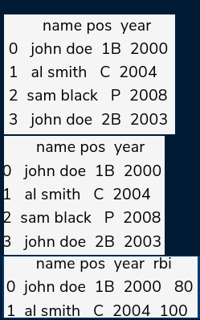

Combining
Chapter Goals:
Understand the methods used to combine DataFrame objects.
Write code for combining DataFrames
~~~~~~~~~~~~~~~~~~~~~~~~~~~~~~~~~
In the previous chapter, we discussed the append function for concatenating DataFrame rows.To concatenate multiple DataFrames along either rows or columns, we use the pd.concat function.
The pd.concat function takes in a list of pandas objects (normally a list of Data Frames) to concatenate. The function also takes in numerous keyword arguments,with axis being one of the more important ones.
◇ axis=0 : Concatenate Rows
◇ axis=1 : Concatenate Columns
In the code example, the final call to pd.concat resulted in a DataFrame with many NaN values. This is because the row
lables for df1 and df3 didn't match, so result was padded with NaN in locations where values didn't exist.
~~~~~~~~~~~~~~~~~~~~~~~~~~~~~~~~~
Merging
Apart from combining DataFrames through concatenation, we can also merge multiple DataFrames.The function we use is pd.merge, which takes in two Data Frames for its two required arguments.

Without using any keyword argument,pd.merge joins two DataFrames using all their common column labels. In the code example, the common labels between mlb_df1 and mlb_df2 were name and year.
The rows that contain the exact same values for the common column labels will be merged.Since ‘john doe’ for year 2000 was in both mlb_df1 and mlb_df2,its rows was merged. However, ‘john doe’ for year 2003 was only in mlb_df1, so it's row was not merged.
~~~~~~~~~~~~~~~~~~~~~~~~~~~~~~~~~
~~~~~~~~~~~~~~~~~~~~~~~~~~~~~~~~~
~~~~~~~~~~~~~~~~~~~~~~~~~~~~~~~~~